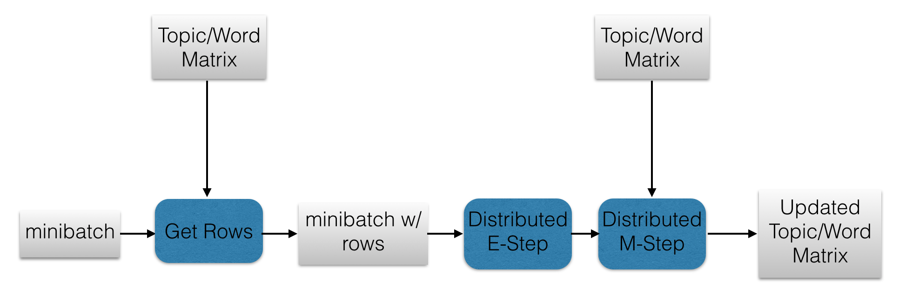

In the past, I have studied the online LDA algorithm from Hoffman et al. in some depth resulting in this blog post and corresponding Scala code. Before we go further I will provide a general description of how the algorithm works. In online LDA, minibatches of documents are sequentially processed to update a global topic/word matrix which defines the topics that have been learned. The processing consists of two steps:
- The E-Step: Given the minibatch of documents, updates to the corresponding rows of the topic/word matrix are computed.
- The M-Step: The updates from the E-Step are blended with the current topic/word matrix resulting in the updated topic/word matrix.
This post details how I developed a distributed version of online LDA using the Apache Spark engine. At first glance, it might seem redundant to build a distributed version of online LDA since one of the main advantages of the algorithm is its scalability (documents are streamed sequentially so they do not need to be kept in main memory). While it is true that the original algorithm is scalable in terms of memory, using a distributed computing framework (such as Spark) can speed the algorithm up immensely. Today, companies are demanding real-time or near real-time data processing which makes a Spark solution advantageous. Furthermore, there are some cases - for example if you choose to learn a sufficiently large number of topics with a sufficiently large vocabulary size - where the original algorithm can in fact run into memory issues. Hopefully I have shown that a distributed version of online LDA would be beneficial.
This blog post will be divided into a few sections. First I will give a very broad overview of how Spark works. Then I will outline how some processes of the original online LDA algorithm can be parallelized (again, for a more detailed outline of how the original online LDA algorithm works I encourage you to read my prevous blog post). Finally I will provide the code for the Spark implemenation as well as a demo.
The Basics of Spark
The beauty of Spark is in its simplicity. It has abstracted away all of the complicated aspects of MapReduce programming and it leaves us with a simple interface with which to build our distributed processing jobs. Here I will provide you with a very brief and incomplete overview of how Spark works (refer to the Spark documentation for more details).
In Spark, all distributed computations are done on RDDs (Resilient Distributed Datasets). RDDs are linear data structures that are distributed across the nodes in your cluster. The most common operation that you can perform on an RDD is a map. The map function takes a function as an input an applies this function to each element of the RDD in parallel and returns another RDD containing the result. Another common operation that is performed on RDDs is the reduce function. reduce also takes a function as an input (that must be commutative and associative) and aggregates the elements of the RDD in based on that function. There are many other very useful RDD operations (eg. reduceByKey, join, zip etc.) that are beyond the scope of this blog post. To learn more read the Spark programming guide.
It is also important to note that, aside from the user-friendly interface, Spark's main advantage is its speed. Unlike previous MapReduce frameworks, Spark utilizes the RAM of the machines in the clusters. When data is kept in memory, disk serialization/deserialzation is greatly reduced. This, in turn, allows us to distribute iterative algorithms much faster (we no longer have to wait for the data to write to disk after each iteration). Online LDA is a distributed algorithm which makes it a great fit for Spark.
Parallelizing the Online LDA Algorithm
Now let's use Spark to parallelize the online LDA algorith. There are four aspects of the algorithm that could benefit from parallelzation - the global topic/word matrix, the minibatch, the E-Step, and the M-Step. Let's start with the topic/word matrix.
A Distributed Topic/Word Matrix
The global topic/word matrix is the data structure that contains all of the topics that have been learned so far. The rows of this matrix correspond to the words in the vocabulary and the columns correspond to the topics. At first, it might seem like this data structure is small enough to exist locally in the driver. After all, there are only so many words in the English language which bounds the number of rows and the number of topics should be less than the number of words in the vocabulary. However, I have experienced out-of-memory errors when this matrix is too large. This is likely not because the matrix itself is too large to fit in the driver, but because size of this matrix combined with everything else that is associated with the Spark application is too large. In addition, distributing the topic/word matrix allows for more parallelism in other parts of the online LDA algorithm which results in an overall speedup. Spark's MLlib library provides a distributed matrix data structure called indexedRowMatrix which is an RDD of tuples containing the rows of the matrix and their corresponding indexes. We will use this data structure to store our topic/word matrix.
A Distributed Minibatch
The minibatch is a collection of documents with which we update the LDA model. In the original algorithm, the documents in the minibatch must be converted to bag-of-words format (i.e. a set of (wordId, frequency) tuples). If the minibatch is made into an RDD (where each element of the RDD consists of a document in the minibatch), the bag-of-words conversion can be performed in parallel via a map and a toBagOfWords function as shown below.
val bagOfWordsRDD:RDD[List[(Int,Int)]] = minibatchRDD.map(x => toBagOfWords(x))
Clearly, this is more efficient that converting each document to its bag-of-words format sequentially. Furthermore, well shall see later that the minibatch must be an RDD in order to parallelize future computations that involve the minibatch.
A Distributed E-Step
The following is the original non-distributed implementation of the E-step for online LDA. It is not important to understand exactly what the code is doing - the important part is observing the presence of the inner and outer loops (indicated in the comments).
def eStep(miniBatch: List[List[(Int, Int)]], expELogBeta: DenseMatrix[Double]): (DenseMatrix[Double], DenseMatrix[Double]) = {
val gamma = new DenseMatrix[Double](miniBatch.length, numTopics, Gamma(100.0, 1.0 / 100.0).sample(numTopics * miniBatch.length).toArray)
val eLogTheta = dirichletExpectation(gamma)
val expELogTheta = exp(eLogTheta)
var sstats = DenseMatrix.zeros[Double](numTopics, numTerms)
for ((doc, idx) <- miniBatch.zipWithIndex) { // <---------- Outer Loop
val idCtList = doc.toList.sortBy(_._1)
val wordIDs = idCtList.map(_._1)
val cts = idCtList.map(_._2.toDouble)
val gammaD: DenseMatrix[Double] = gamma(idx, ::).t.toDenseMatrix
val expELogThetaD: DenseMatrix[Double] = expELogTheta(idx, ::).t.toDenseMatrix
val expELogBetaD = expELogBeta(0 until expELogBeta.rows, wordIDs.toIndexedSeq).toDenseMatrix
val phiNorm: DenseMatrix[Double] = expELogThetaD * expELogBetaD + 1e-100
val docCounts = DenseMatrix(cts.toArray)
//Recursive loop to infer phiNorm, gammaD and exoElogThetaD parameters
def gammaUpdate(pn: DenseMatrix[Double], expETD: DenseMatrix[Double]): DenseMatrix[Double] = {
val term1 = expETD :* (docCounts / pn) * expELogBetaD.t
term1(::, *) + alpha
}
def thetaUpdate(gD: DenseMatrix[Double]): DenseMatrix[Double] = {
exp(dirichletExpectation(gD))
}
def phiUpdate(expETD: DenseMatrix[Double]): DenseMatrix[Double] = {
expETD * expELogBetaD + 1e-100
}
def eStepIterator(phiNorm: DenseMatrix[Double], expELogThetaD: DenseMatrix[Double], gammaD: DenseMatrix[Double]): (DenseMatrix[Double], DenseMatrix[Double], DenseMatrix[Double]) = {
val lastGamma = DenseMatrix.zeros[Double](gammaD.rows, gammaD.cols)
def loop(counter: Int, newGamma: DenseMatrix[Double], newTheta: DenseMatrix[Double], newPhi: DenseMatrix[Double], lastGamma: DenseMatrix[Double]): (DenseMatrix[Double], DenseMatrix[Double], DenseMatrix[Double]) = {
if (((mean(abs(newGamma - lastGamma))) < gammaThreshold) || (counter > iterations)) {
(newGamma, newPhi, newTheta)
}
else {
val term1 = gammaUpdate(newPhi, newTheta)
val term2 = thetaUpdate(term1)
val term3 = phiUpdate(term2)
loop(counter + 1, term1, term2, term3, newGamma)
}
}
loop(0, gammaD, expELogThetaD, phiNorm, lastGamma)
}
//execute recursive loop function
val (newGammaD, newPhiNorm, newExpELogThetaD) = eStepIterator(phiNorm, expELogThetaD, gammaD) // <---------- Inner Loop
gamma(idx, ::) := newGammaD.toDenseVector.t
val sstatTerm = newExpELogThetaD.t * (docCounts / newPhiNorm)
for ((i, ct) <- wordIDs.zipWithIndex) {
sstats(::, i) :+= sstatTerm(::, ct)
}
}
sstats = sstats :* expELogBeta
(gamma, sstats)
}
As you can see, there is an outer loop over all documents in the minibatch, and an inner (recursive) loop for each document. In the distributed implementation, the inner loop is performed in parallel for every document in the minibatch RDD (using a map function) and then the results are combined (using a reduce function).
So let's first focus on the map function. This map function is applied to every document in the minibatch RDD in parallel so the function should take only one document as an input and be essentially the same as the inner loop of the above non-distributed version. Unfortunately, this produces a big problem because this code also requires the global topic/word matrix (the expELogBeta variable) which is now an RDD. Spark does not allow nested RDD computations! That is, one cannot apply a map function to an RDD that involves another RDD (this will create a serialization error). We have to be a bit more creative!
This problem can be solved by first observing that the E-Step does not necessarily require all of the rows of the topic/word matrix, only those corresponding to the words that are in the minibatch. Therefore, let's have our map function take a list of 3-tuples that consist of the wordId, the word count, and the row of the topic/word matrix corresponding to the wordId. This way, we can compute the E-Step without working with the distributed topic/word matrix directly. The code below shows this implementation.
def eStep(expELogBeta: Array[(V, Int, Int)], numTopics: Int, alpha: Double, gammaThreshold: Double, iterations: Int): (Array[(Int, Array[Double])], DenseMatrix[Double]) = {
var gammaD = new DenseMatrix[Double](numTopics, 1, Gamma(100.0, 1.0 / 100.0).sample(numTopics).toArray)
val eLogThetaD = dirichletExpectation(gammaD)
val expELogThetaD = exp(eLogThetaD)
val cts = expELogBeta.map(x => x._3.toDouble)
val wordIDs = expELogBeta.map(x => x._2)
val expELogBetaD = expELogBeta.map(x => x._1.toArray)
val expELogBetaDDM = new DenseMatrix(expELogBetaD.size, numTopics, expELogBetaD.flatten, 0, numTopics, true)
val phiNorm = expELogBetaDDM * expELogThetaD + 1e-100
val docCounts = DenseMatrix(cts)
def gammaUpdate(pn: DenseMatrix[Double], expETD: DenseMatrix[Double]): DenseMatrix[Double] = {
val term1 = expETD :* (docCounts / pn.t) * expELogBetaDDM
term1(::, *) + alpha
}
def thetaUpdate(gD: DenseMatrix[Double]): DenseMatrix[Double] = {
exp(dirichletExpectation(gD))
}
def phiUpdate(expETD: DenseMatrix[Double]): DenseMatrix[Double] = {
expELogBetaDDM * expETD + 1e-100
}
def eStepIterator(phiNorm: DenseMatrix[Double], expELogThetaD: DenseMatrix[Double],
gammaD: DenseMatrix[Double]): (DenseMatrix[Double], DenseMatrix[Double], DenseMatrix[Double]) = {
val lastGamma = DenseMatrix.zeros[Double](gammaD.rows, gammaD.cols)
def loop(counter: Int, newGamma: DenseMatrix[Double], newTheta: DenseMatrix[Double], newPhi: DenseMatrix[Double],
lastGamma: DenseMatrix[Double]): (DenseMatrix[Double], DenseMatrix[Double], DenseMatrix[Double]) = {
if (((mean(abs(newGamma - lastGamma))) < gammaThreshold) || (counter > iterations - 1)) {
(newGamma, newPhi, newTheta)
}
else {
val term1 = gammaUpdate(newPhi, newTheta)
val term2 = thetaUpdate(term1)
val term3 = phiUpdate(term2)
loop(counter + 1, term1, term2, term3, newGamma)
}
}
loop(0, gammaD, expELogThetaD, phiNorm, lastGamma)
}
//execute recursive loop function
val (newGammaD, newPhiNorm, newExpELogThetaD) = eStepIterator(phiNorm, expELogThetaD, gammaD)
gammaD = newGammaD
val sstatTerm: DenseMatrix[Double] = (docCounts / newPhiNorm.t).t * newExpELogThetaD.t
(sstatTerm.t.toArray.grouped(sstatTerm.cols).toArray.zip(wordIDs).map(x => (x._2, x._1)), gammaD)
}
However, currently our minibatch RDD only contains lists of (wordId, frequency) tuples (i.e. bag-of-words format). We need to somehow combine our current minibatch RDD with the distributed topic/word matrix to get lists of (wordId, frequency, row) 3-tuples in order to be able to apply our new map function to it. This can be done in the following way.
- Give each document in the minibatch RDD a unique Id via the
zipWithIndex function followed by a map function.
- Apply the
flatMap function to the RDD to produce an RDD of (docId, wordId, frequency) 3-tuples.
- Use the
join function to join this RDD with the distributed topic/word matrix via the wordId key to produce an RDD of (docId, wordId, frequency, row) 4-tuples.
- Finally use the
groupByKey on the docId field to get our minibatch RDD in the correct (row, wordId, frequency) 3-tuple format.
This process is shown in the following code.
val rowIdCtRDD=bowRDD.zipWithIndex() //give each document and Id
.map{case (bow,docId)=>(docId,bow)}
.flatMap{case (docId, bow)=>bow.map{case (wordId,ct)=>(docId,(wordId,ct))}} // create desired tuple
.map{case (docID,(wordID,ct)) => (wordID,(docID,ct))}
.join(
expELogBeta.rows.map{x=>(x.index.toInt,x.vector)} //join to get rows matching wordIds
)
.map{case (wordId,((docId,ct),row)) => (docId,(row,wordId,ct))}
.groupByKey() //group by document Id
.map{case (docId,rowStats) => rowStats.toArray}
Now the E-Step can be performed on the minibatch RDD via a map operation followed by a reduce operation which simply sums the results by id.
val eStepRDD=rowIdCtRDD
.map(x=>eStep(x, numTopics, alpha, gammaThreshold, iterations)._1) //perform E-Step
.flatMap(z=>z)
.reduceByKey(arraySum) //sum results by rowId
A Distributed M-Step
In the original non-distributed implementation the M-Step was easy. The new global topc/word matrix was computed by a simple weighted sum of the previous topic\word matrix and the output of the E-Step for the current minibatch (which were both local matrices). It is a bit more complicated with the distributed implementation because the topic/word matrix is distributed as is the result of the E-step. Furthermore, the result of the E-step does not contain all rows of the topic/word matrix, only those corresponding to the words present in the current minibatch. However, we can still compute the same weighted sum with a leftOuterJoin based on the indexes of the rows of the topic/word matrix and the result of the E-step followed by a map that sums the joined rows. This is shown in the following code.
val mStepRDD=sstatsRM.rows
.map(x=>(x.index.toInt,x.vector.toArray)) //get matrix rows
.leftOuterJoin( //join with E-step result by rowId
eStepRDD
.map{ case (rowId,row)=>
(rowId,blend(rho,row,mbSize.toInt, threadsSeen))}
)
.map{ case (rowId,(oldRow, newRow))=>
(rowId,optionArraySum(oldRow,newRow))} //sum matching rows
.join(
expELogBeta.rows
.map(x=>(x.index.toInt,x.vector.toArray))
)
.map{case (rowId,(oldRow, newRow)) =>
(rowId,arrayElMultiply(oldRow,newRow))} //also elementwise multiply with previous matrix
As you can see, this is exactly the same as performing a weighted sum of two matrices, it just takes a bit more work when they are both distributed.
The Full Algorithm
Now we are at a point at which we can describe the full algorithm. For each minibatch of documents, the following steps are taken.
- The minibatch RDD is transformed into its bag-of-words form.
- The minibatch RDD is joined with the topic/word matrix RDD to get the rows corresponding to the words in the minibatch.
- The E-Step function is applied to the minibatch RDD.
- The M-Step function is applied to the output RDD of the previous step.
- The rows of the topic/word matrix RDD corresponding to the words in the minibatch are updated.
These steps are repeated for each minibatch. The following diagram illustrates this process.

Code Demo
Now let's try this algorithm on a real dataset of documents. Let's use the NIPS dataset that was used in the code demo from my previous post on online LDA. In order to actually implement this algorithm, we must have a way to to iterate over minibatches. The minibatch iterator should be implemented by the user since it is dependent on how the documents are stored. The following is the code which implements online LDA in Spark (with the minibatch iterator and Spark context code omitted).
while (mbIterator.hasNext) {
val mb = mbIterator.next
val mbSize = mb.count()
threadsSeen += mbSize.toInt
numUpdates += 1
rho = math.pow(1.0 + numUpdates, -decay)
//raw text to bag-of-words
val bowRDD = mb.map(x => toBagOfWords(x, vocab))
//preprocess sstats matrix
val sstatsPlusEta = RmElementwiseAdd(sstatsRM, eta)
val expELogBeta = matrixExp(dirichletExpectation(sstatsPlusEta))
//preprocess minibatch RDD
val rowIdCtRDD = bowRDD.zipWithIndex()
.map { case (bow, docId) => (docId, bow)}
.flatMap { case (docId, bow) => bow.map { case (wordId, ct) => (docId, (wordId, ct))}}
.map { case (docID, (wordID, ct)) => (wordID, (docID, ct))}
.join(
expELogBeta.rows.map { x => (x.index.toInt, x.vector)}
)
.map { case (wordId, ((docId, ct), row)) => (docId, (row, wordId, ct))}
.groupByKey()
.map { case (docId, rowStats) => rowStats.toArray}
//perform E-Step
val eStepRDD = rowIdCtRDD
.map(x => eStep(x, numTopics, alpha, gammaThreshold, iterations)._1)
.flatMap(z => z)
.reduceByKey(arraySum)
//perform M-Step
val mStepRDD = sstatsRM.rows
.map(x => (x.index.toInt, x.vector.toArray))
.leftOuterJoin(
eStepRDD
.map { case (rowId, row) =>
(rowId, blend(rho, row, mbSize.toInt, threadsSeen))
}
)
.map { case (rowId, (oldRow, newRow)) =>
(rowId, optionArraySum(oldRow, newRow))
}
.join(
expELogBeta.rows
.map(x => (x.index.toInt, x.vector.toArray))
)
.map { case (rowId, (oldRow, newRow)) =>
(rowId, arrayElMultiply(oldRow, newRow))
}
//update sstats matrix
sstatsRM = new IndexedRowMatrix(
mStepRDD.map(x => IndexedRow(x._1.toLong, Vectors.dense(x._2)))
)
}
//print learned topics
showTopics(10, sstatsRM, id2Word)
The above code produces the following topics
Topic 0: List((activity,0.032092510865724705), (voltage,0.028580820005928525), (neurons,0.025338836825008867), (cortex,0.024546295981522796), (rhythmic,0.023029320016109932), (wta,0.02047031045772205), (tones,0.02044761938141161), (obs,0.016662670108027338), (analog,0.01639142696901859), (cortical,0.016364893763539945))
Topic 1: List((inference,0.06811446156014736), (models,0.038610276907281436), (data,0.03699453925479673), (prior,0.033185332552837114), (posterior,0.032290300391455466), (probability,0.025078686881619315), (parent,0.02041949893883364), (parameters,0.018027714272498996), (gaussian,0.017631357263122132), (log,0.017515618349787442))
Topic 2: List((state,0.04652001892330229), (policy,0.04113501660902407), (eligibility,0.03905536641647694), (sarsa,0.03905536631097504), (truncated,0.03326530692419029), (traces,0.03142425104787902), (memoryless,0.027722772212976254), (policies,0.024839780749834842), (agent,0.02303785156504393), (pomdps,0.02301863583267124))
Topic 3: List((algorithm,0.02135927293979804), (learning,0.010459512976094452), (error,0.008990052150829781), (weight,0.0073065564236364155), (function,0.007146485129287556), (vector,0.006762208984454446), (number,0.006051699485084758), (-rcb-,0.005855829811131096), (results,0.005837170436069406), (probability,0.005788740947910415))
Topic 4: List((attentional,0.031205396268822388), (image,0.030771091189727498), (location,0.02025190023001232), (images,0.01848811029404064), (target,0.01788585445419973), (streams,0.014740100512122468), (field,0.014659463334666768), (tones,0.014100436801905392), (bottom-up,0.013031110714897202), (dts,0.012683978720498826))
As you can see, these topics seem quite coherent and roughly correspond to different fields of machine learning.
References